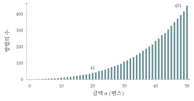

STEP I 1997, 문제 1
계속 읽기 전에 문제를 먼저 읽어 보자. 문제는 STEP Support Programme의 문제 데이터베이스에 있다: step.maths.org/questions/97-s1-q1
도입
이 문제는 책 전체에서 가장 쉬운 문제처럼 보인다. 가능한 경우를 나열하기만 하면 되기 때문이다. 그러나 나열은 금세 감당할 수 없게 된다. 영국 사람들이 주머니에 넣고 다니는 동전으로 \(20\)p를 만드는 방법은 \(41\)가지, \(50\)p를 만드는 방법은 \(451\)가지, £1을 만드는 방법은 \(4563\)가지나 된다. 이 문제가 실제로 요구하는 것은 하나의 체계, 즉 빠뜨리는 것도 없고 두 번 세는 것도 없도록 개수를 정리하는 방법이다.
그 체계 뒤에는 아름다운 수학이 숨어 있다. 각 동전은 하나의 등비급수(geometric series)에 대응하고, \(n\)펜스를 만드는 방법의 수는 이 급수들의 곱에서 나타나는 계수(coefficient)이다. 같은 아이디어를 모든 자연수에 한꺼번에 적용하면 정수론에서 가장 깊은 주제 가운데 하나인 오일러(Euler)의 분할(partition) 이론이 나온다.
시작하기 전에
\(2\)p와 \(1\)p 동전만으로 \(n\)펜스를 만드는 방법은 몇 가지인가? 왜 그 답은 \(2\)p 동전을 몇 개 쓰는지에만 의존하는가?
\(2\)p 동전의 개수를 정하고 나면 나머지는 모두 \(1\)p 동전이어야 하므로, 가능한 \(2\)p 동전의 개수 \(0, 1, \ldots, \lfloor n/2\rfloor\) 각각에 대하여 정확히 한 가지 방법이 있다. 따라서 방법은 \(\lfloor n/2\rfloor + 1\)가지이다. 이것을 \(a(n)\)이라 하자. 예를 들어 \(a(10) = 6\)이고 \(a(5) = 3\)이다.
차근차근 풀기
단계 1 10펜스
가장 큰 동전부터 기준으로 삼아 개수를 정리하라. \(10\)p 동전은 몇 개 쓸 수 있는가? 그것이 정해졌을 때 \(5\)p 동전은 몇 개 쓸 수 있는가?
\(10\)p 동전 하나: \(1\)가지.
\(10\)p 없이 \(5\)p 두 개: \(1\)가지.
\(10\)p 없이 \(5\)p 하나: 나머지 \(5\)p를 \(2\)p와 \(1\)p로 만드는 방법은 \(a(5) = 3\)가지.
\(10\)p도 \(5\)p도 없이: \(10\)p를 \(2\)p와 \(1\)p로 만드는 방법은 \(a(10) = 6\)가지.
합계는 \(1 + 1 + 3 + 6 = 11\)이다.■
단계 2 한 층씩 쌓아 올리기
\(5\)p, \(2\)p, \(1\)p 동전으로 \(n\)펜스를 만드는 방법의 수를 \(b(n)\)이라 하자. 함수 \(a\)를 이용하여 \(b(n)\)을 어떻게 나타낼 수 있는가?
\(5\)p 동전의 개수 \(k\)를 정하면, 남은 \(n - 5k\)펜스는 \(2\)p와 \(1\)p 동전으로 만든다. 따라서 \[b(n) = a(n) + a(n - 5) + a(n - 10) + \cdots.\] 이로부터 다음을 얻는다.
| \(n\) | \(0\) | \(5\) | \(10\) | \(15\) | \(20\) |
|---|---|---|---|---|---|
| \(a(n)\) | \(1\) | \(3\) | \(6\) | \(8\) | \(11\) |
| \(b(n) = a(n) + b(n - 5)\) | \(1\) | \(4\) | \(10\) | \(18\) | \(29\) |
마찬가지로 \(10\)p 동전까지 쓰는 방법의 수를 \(c(n)\)이라 하면 \(c(n) = b(n) + b(n - 10) + \cdots\)이므로 \(c(10) = 10 + 1 = 11\)(1단계의 결과와 일치한다)이고 \(c(20) = b(20) + b(10) + b(0) = 29 + 10 + 1 = 40\)이다.
단계 3 20펜스
마지막으로 \(20\)p 동전을 생각하자. 이 동전을 쓰거나(한 가지) 쓰지 않는다(\(c(20)\)가지). 따라서 방법은 \[40 + 1 = 41 \text{가지이다}. \qed\]
구조에 주목하라. 새 동전이 하나 추가될 때마다 층이 하나 더해지고, 각 층은 바로 앞 층의 값을 새 동전의 액면가만큼의 간격으로 더한 것이다. 컴퓨터가 £1이나 £100에 대해 이 계산을 어떻게 수행할지 짐작할 수 있는가?
돌아보기
가장 큰 부분을 기준으로 정리하라. 가장 큰 동전의 개수를 먼저 고정하자 개수 세기가 체계적으로 되었다.
표를 만들어라. 새 동전이 추가될 때마다 바로 앞 행으로부터 새 행을 계산했다. 이것이 바로 동적 계획법(dynamic programming)으로, 컴퓨터가 이런 것을 셀 때 쓰는 표준적인 방법이다.
알려진 경우와 대조하라. 표는 \(10\)p를 만드는 \(11\)가지 방법을 그대로 재현했다.
숨은 수학
등비급수로서의 동전
이 문제를 대수로 바꾸어 주는 아이디어는 다음과 같다. 사용하는 \(5\)p 동전의 개수는 \(0, 1, 2, \ldots\)일 수 있고, 이는 각각 \(0, 5, 10, \ldots\)펜스를 기여한다. 이것을 다음 급수로 기록한다. \[1 + x^5 + x^{10} + x^{15} + \cdots = \frac{1}{1 - x^5}.\] 각 동전에 대해 똑같이 한 다음 모두 곱한다. \[\frac{1}{(1 - x)(1 - x^2)(1 - x^5)(1 - x^{10})(1 - x^{20})} = \sum_n w(n)x^n.\] 괄호를 전개하면 각 항 \(x^n\)은 각 괄호에서 항을 하나씩, 즉 각 동전의 개수를 하나씩 골라 총액이 \(n\)이 되게 할 때 생긴다. 따라서 \(x^n\)의 계수 \(w(n)\)은 정확히 \(n\)펜스를 만드는 방법의 수이다. 2단계의 표는 이 곱을 괄호 하나씩 전개한 것에 불과했다. 이것이 9.4 절에서 다룬 생성함수(generating function)의 아이디어이며, 그 위력이 드러나는 곳이 바로 곱셈이다. 생성함수의 곱은 선택들의 조합을 센다.

분할
모든 자연수를 동전으로 쓸 수 있다면 어떻게 될까? 그러면 순서를 무시하고 \(n\)을 양의 정수들의 합으로 나타내는 방법의 수가 분할수(partition number) \(p(n)\)이다. 예를 들어 \(4 = 3 + 1 = 2 + 2 = 2 + 1 + 1 = 1 + 1 + 1 + 1\)이므로 \(p(4) = 5\)이다. 오일러는 1748년에 \[\sum_{n \geq 0}p(n)x^n = \frac{1}{(1 - x)(1 - x^2)(1 - x^3)(1 - x^4)\cdots},\] 임을 알아내고, 이를 이용하여 놀라운 항등식들을 발견했다. 그 가운데 하나는 다음과 같다. \(n\)을 서로 다른 부분들의 합으로 나타내는 방법의 수는 홀수인 부분들의 합으로 나타내는 방법의 수와 같다. (생성함수를 쓰면 증명은 대수 계산 한 줄이다. 연습문제에서 직접 해 보라.)
분할수는 빠르게 커진다. \(p(10) = 42\), \(p(100) = 190\,569\,292\)이다. 1918년 하디(G. H. Hardy)와 라마누잔(Srinivasa Ramanujan)은 \(p(n)\)에 대한 놀라운 공식을 발견했는데, 이는 무한급수로서 그 첫째 항은 다음과 같다. \[p(n) \approx \frac{1}{4n\sqrt3}\,e^{\pi\sqrt{2n/3}}.\] 이 공식을 검증하기 위해 퍼시 맥마흔(Percy MacMahon)은 오일러의 항등식을 이용하여 손으로 \(p(200) = 3\,972\,999\,029\,388\)을 계산했다. 하디와 라마누잔의 급수에서 처음 몇 항만으로도 오차가 \(1\)보다 작은 정확한 답이 나왔다. 라마누잔은 또한 \(p(5n + 4)\)는 항상 \(5\)로, \(p(7n + 5)\)는 \(7\)로, \(p(11n + 6)\)은 \(11\)로 나누어떨어진다는 것도 발견했다. 이런 패턴이 더 이상 없는 이유를 설명하는 데에는 21세기까지 시간이 걸렸다.
사고 기술
어떤 대상이 서로 독립적인 선택들로 만들어질 때, 각 선택은 하나의 인수가 되고, 전체 크기가 \(n\)인 대상의 개수는 그 곱에서 \(x^n\)의 계수이다.
이 방법은 개수 세기를 대수로 바꾸어 준다. 대학에서는 이것이 열거 조합론(enumerative combinatorics)의 기초가 되며, 확률생성함수(probability generating function)가 독립 확률변수(independent random variables)의 합을 다루는 방식도 바로 이것이다.
더 도전하기
두 종류의 6. STEP II 2012, 문제 1에 도전해 보라. 이 문제는 등비급수의 곱으로 개수를 센다. 마지막에, 그 계수들이 답이 되는 동전 세기 문제를 하나 설명해 보라.
서로 다른 부분과 홀수 부분. \((1 + x)(1 + x^2)(1 + x^3)\cdots\)이 서로 다른 부분들로의 분할에 대한 생성함수임을 보여라. \(1 + x^k = \frac{1 - x^{2k}}{1 - x^k}\)를 이용하여 이것이 \(\frac{1}{(1 - x)(1 - x^3)(1 - x^5)\cdots}\)와 같음을 보이고, 오일러의 정리를 이끌어 내라. \(n = 6\)일 때 확인해 보라.
공식. \(1\)p, \(2\)p, \(5\)p 동전만으로 \(n\)펜스를 만드는 방법의 수가 \(\frac{(n + 4)^2}{20}\)에 가장 가까운 정수임을 보여라. (먼저 작은 \(n\)에 대해 확인해 보라.)
순서가 중요할 때. 순서를 고려하여 \(1\)p와 \(2\)p 동전을 투입구에 하나씩 넣어 \(n\)펜스를 만드는 방법은 몇 가지인가? (이 수열은 이전에 본 적이 있다.)
더 읽을거리
George Andrews & Kimmo Eriksson, Integer Partitions (Cambridge University Press). 학부생을 위한 짧고 읽기 쉬운 입문서.
George Pólya, “On picture-writing”, American Mathematical Monthly 63 (1956). 1달러를 바꾸는 문제(방법은 \(292\)가지이다)를 이용하여 생성함수를 설명한 포여(Pólya)의 고전적인 글.
Robert Kanigel, The Man Who Knew Infinity (Abacus). 라마누잔의 생애와 하디와의 협업을 다룬 책.